FS Report Designer
Der FS Report Designer ist für den Einsatz mit Framework Studio konzipiert. Es handelt sich um den DevExpress® Report Designer, welcher für diesen Zweck entsprechend optimiert und angepasst wurde.
Standardmäßige Funktionalitäten sind in dieser Doku nicht eingeschlossen - hierzu sollte die offizielle Dokumentation von DevExpress® beansprucht werden. Diese ist äußerst umfangreich, ist jedoch auf Englisch geschrieben. Für eine deutsche Übesetzung können Sie Google Translator verwenden. Dieser funktioniert (leider) am besten mit Google Chrome. Dieser kann auch komplette Websites übersetzen.
Der FS Report Designer kann über "Edit Report" im Report Document Type geöffnet werden. Durch die Integration in FS sind keine weiteren Einstellungen notwendig.
Die Daten, welche im FS Report Designer verwendet werden können, werden durch die DataSource definiert. Hier müssen keine Haken gesetzt werden, da DevExpress® auf alle Daten zugreift und selbst nur die verwendeten Daten zieht.
Note
Falls sich die Datenquellen oder die Komponenten ändern, die als Datenquelle genutzt werden, muss das Report Document und die betroffenen Interfaces der Datenquellen neu kompiliert werden. Dies zeigt Framework Studio an.
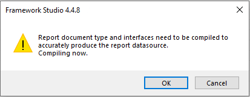
Allgemeine Verhaltensweisen des FSReportDesigners
Regulär wird eine Report-Datei aus Framework-Studio heraus bearbeitet. Dabei startet Framework-Studio den Report-Designer für die entsprechende Datei und stellt sicher, dass die im Report DocumentType definierten Datasources korrekt und vollständig angeboten werden. Wird der Report-Designer nach der Bearbeitung geschlossen, überträgt Framework Studio diese eine geänderte .repx-Datei (inklusive der darin enthaltenen Embedded Subreports) wieder zurück in den Report Document Type und in das Repository.
Dadurch ergeben sich einige Besonderheiten beim Umgang mit Dateien.
Die Registerkarte des initial durch Framework Studio geöffneten Haupt-Reports kann nicht geschlossen werden. Es muss der komplette Report Designer beendet werden.
Werden zusätzlich Dateien aus dem Datei-System geöffnet, dann werden diese als Readonly angezeigt. Gleiches gilt beim Öffnen eines Linked Subreports.
Werden Dateien als Readonly geöffnet, dann wird dies in der Registerkarte durch ein kleines Schloss gekennzeichnet und eine Meldung mit einem Hinweis angezeigt. Um möglichst viel Bedienkomfort zu gewährleisten ist die Bearbeitung nicht eingeschränkt. Bei Bedarf müssen vorgenommene Änderungen mit Save As... in eine neue Datei gespeichert werden.
Mit Save As... kann ein Embedded Subreport aus dem Haupt-Report "herausgelöst" und eine Kopie als eigenständige Datei gespeichert werden. Das Embedded Subreport Control des Haupt-Reports und der darin gespeicherte Subreport bleiben davon unberührt.
Eine New File Operation steht nicht zur Verfügung. Neue Dateien müssen aus Framework Studio heraus erzeugt werden.
Standalone-Ausführung der FSReportDesigner.exe
Die FS-Customizations werden via eines Launchers (FSReportDesigner.exe) auf den standardmäßigen Report-Designer angewandt. Aus diesem Grund müssen DevExpress® Reports über diesen Launcher editiert werden.
Die entsprechende .exe ist auf oberster Ebene im Installationsverzeichnis zu finden, also "\Framework Studio X.Y.0.0\FSReportDesigner.exe".
Diese .exe lässt sich auf beliebige Weise öffnen (unten genauer erläutert). Wenn die geöffnete Datei sich nicht in einem Report-Verzeichnis befindet und der Pfad zu diesem nicht als Argument angegeben wurde, erscheint folgende Meldung:
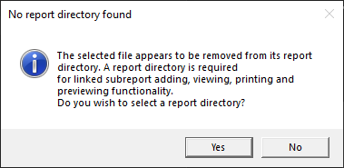
"Yes" öffnet einen Verzeichnis-Auswahldialog, in dem sich ein Report-Verzeichnis auswählen lässt. Falls es sich um eine valide Auswahl handelt, wird der Report so gehandhabt, als ob er sich in diesem Verzeichnis befinden würde. Alle vom Report-Verzeichnis abhängigen Features stehen dann zur Verfügung.
"No" oder ein Abbruch der Auswahl startet den Designer völlig standalone. Custom Controls stehen noch zur Verfügung, aber Features, die von Interoperabilität mit anderen Report-Dateien abhängen sind nicht nutzbar.
Direkter Aufruf
Bei einem direkten Aufruf der FSReportDesigner.exe, z.B. per Doppelklick, oder beim Aufruf mit einer ungültigen .repx-Datei, wird ein Auswahldialog für eine .repx geöffnet.
Ein Öffnen einer .repx-Datei per Windows file association oder durch drag & drop einer .repx-Datei auf die .exe öffnet die besagte Datei und verhält sich ansonsten identisch.
Important
Bei einem Standalone-Aufruf des Report-Designers steht normalerweise keine Datenquelle zur Verfügung. Um sie trotzdem nutzen zu können, müssen die Argumente "--type", "--assembly" und "--folder" angegeben sein.
Kommandozeilen-Argumente
Der FSReportDesigner ist von der Kommandozeile aus granularer aufrufbar. Die folgenden Argumente stehen zur Verfügung:
--report: Muss in der Kommandozeile angegeben werden. Definiert den voll qualifizierten Pfad zu der zu editierenden .repx-Datei.--type: Der voll qualifizierte type name der Datenquelle, z.B. 'NV.ERP.MM.Sales.rptSalesDocument_Rptx'--assembly: Der Name der assembly-Datei, die den bereits angegebenen Typen beinhaltet, in diesem Beispiel also 'NV.ERP.MM.Sales_RDT.dll'.--folder: Das Verzeichnis, welches die benötigten Assembly-Dateien beinhaltet - üblicherweise '\bin\' im Compile-Verzeichnis.-l/--locked(optional): Setzt den Report in einen readonly-modus, welcher Änderungen und das Speichern verhindert.
Einstellungen im Winforms-Designer
Beim Öffnen eines Reports werden folgende Standardeinstellungen angewandt:
- Grid Snapping
- Einheit (tenths of a millimeter)
- A4
- Seitenränder
- Schriftart: Arial
- Schriftgröße: 8pt
Weitere Details finden sich im Folgenden:
Grid
Der Designer nutzt ein Raster (Grid), an welchem sich Controls per Snapping ausrichten, d.h. Objekte rasten an den Grid-Linien ein.
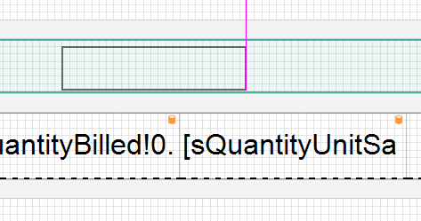
Einstellungen des Grids, wie dessen Größe, Snapping Mode und bei welchen Kästchen Snapping angewandt wird, werden von FS aus festgesetzt und an den Designer übergeben.
Note
Änderungen der Grid-Einstellungen gehen beim erneuten Öffnen verloren und könnten zu Verschiebungen von Controls führen – wird deshalb nicht empfohlen.
Maße
Die Maßeinheit ist gleichermaßen auf Zehntelmillimeter festgesetzt, obwohl auch Pixel und Hunderstel-Inches unterstützt werden.
Vererbung
Der Designer folgt einer hierarchischen Vererbung übergeordneter Controls an untergeordnete Controls. Solange eine Eigenschaft nicht überschrieben ist (sichtbar durch das gefüllte Kästchen neben der Eigenschaft in den Properties), wird es von den übergeordneten Controls übernommen.
Dies erlaubt es, bspw. Schriftarten über den gesamten Report hinweg zu ändern.
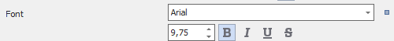
Um eine Überschreibung zu löschen, muss auf das Kästchen geklickt werden. Anschließend öffnet sich ein entsprechendes Kontextmenü, wo das Property mit ‚Reset‘ zurückgezusetzt werden kann.
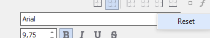
Read-only
Beim Öffnen eines Reports, ohne diesen vorher auszuchecken, wird dieser im Read-only-Modus geöffnet. Dies garantiert, dass keine Änderungen möglich sind. Lediglich das Layout des Reports ist sichtbar.
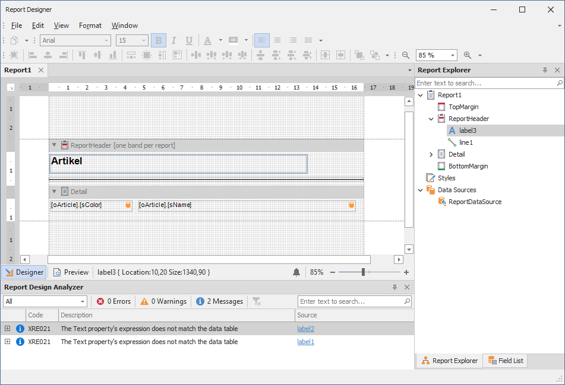
Fenster im Designer
In den folgenden Unterkapitel werden die einzelnene Oberflächenelemente des Designers aufgeführt.
- Field List
- Report Designer Analyzer
- Group and Sourt
- Properties

Field List Fenster
Hier werden alle Felder der Datenquelle angezeigt. Um diese zu nutzen, reicht es, sie auf den Report zu ziehen.
Weiterhin lassen sich mit Rechtsklick Calculated Fields anlegen/bearbeiten und Report-Parameter pflegen.
Die Field List verfügt über eine Volltextsuche, um benötigte Felder schnell zu finden.
Zieht man von der Field List aus mit Rechts- statt Linksklick, werden nur die Namen der Felder auf den Report gelegt. Diese Funktion ist nützlich, um schnell eine Grundstruktur für Tabellenüberschriften erstellen zu können.
Report Design Analyzer Fenster
Hier werden Fehler und Warnungen im Report angezeigt. Fehler führen zu einem Fehlschlag des Drucks, weshalb dieses Fenster vor dem Speichern immer überprüft werden sollte.
Group and Sort Fenster
Dieses Fenster bietet eine Übersicht über alle Gruppierungen und Sortierungen, die aktuell im Einsatz sind, sowie deren Hierarchie.
Properties Fenster
Das Property-Fenster listet alle Eigenschaften eines ausgewählten Controls auf. Ist kein Control ausgewählt, finden sich hier die Einstellungen des Reports selbst, da diese als Eigenschaften des Reports realisiert sind.
Report mit Bands strukturieren
Ein Report Layout besteht aus Bändern, die Report-Controls enthalten und deren Position auf den Dokumentseiten festlegen. Sie bilden die Struktur eines Reports. Verschiedene Bands haben verschiedene Funktionen und demnach auch verschiedene Eigenschaften, welche im folgenden Kapitel erörtert werden.
Dies ist eine Übersicht über die verschiedenen Bands, welche zur Verfügung stehen:
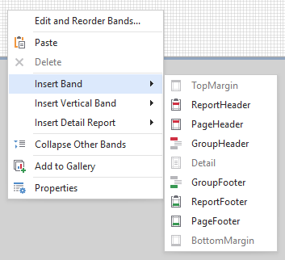
Ein leerer Report enthält die folgenden Bereiche:
- Das Detail Band wird für jeden Datensatz in einer Datenquelle gedruckt, es sei denn, Sie haben die Daten gefiltert.
- Jeder Bericht sollte einen Detail Band enthalten, diesen können Sie nicht löschen.
- Die Bands TopMargin und BottomMargin. Diese Bänder werden auf jeder Dokumentseite einmal wiederholt.
TopMargin/ BottomMargin
Noch über/unter dem Footer und Header sind diese Bands als Platzhalter gedacht, können aber trotzdem Controls beinhalten.
Sie haben keine besonderen Eigenschaften.
ReportHeader/ ReportHeaderFooter
Der ReportHeader und der ReportFooter werden nur jeweils ein einziges Mal am Anfang bzw. Ende des Reports gedruckt. Sie verfügen über eine Eigenschaft Keep Together, sodass sie jeweils nur gedruckt werden, wenn sie auf eine Seite passen. Des Weiteren haben sie die Eigenschaft Page Break, um eine neue zusätzliche Seite vor bzw. nach ihnen zu veranlassen.
PageHeader/ PageHeaderFooter
Wie ReportHeader/ -Footer, nur einmal pro Seite. Sie verfügen über die Eigenschaft Print On, die es erlaubt beispielsweise nur zu drucken, falls kein Report Header auf derselben Seite ist.
Detail
Das Detail Band hat besondere Eigenschaften. In ihm wird automatisch über eine Collection iteriert, falls diese als Data Member am Report selbst eingestellt ist.
Der Data Member bezeichnet die primäre Collection, über die iteriert werden soll. Alle Bänder unter dem Detail Band müssen auch in der Datenquelle dem Data Member untergeordnet sein oder müssen ihre Felder mit vollem Namen qualifizieren.
Als Beispiel: In diesem Report ist oSalesDocument.oSalesOrderColl als Data Member definiert.
Um auf das direkt am oSalesDocument (also über dem Data Member) hängende decTaxRa-te1 zuzugreifen, muss voll über oSalesDocument.decTaxRate1 qualifiziert werden.
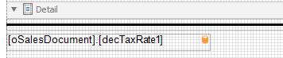
Das Gleiche gilt für Calculated Fields.
Falls über eine dem Detail band untergeordnete Collection iteriert werden soll, muss ein Detail Report Band oder ein Subreport eingesetzt werden. FillEmptySpace in Kombination mit GroupFooter.PrintAtBottom erlaubt es, Platzhalter zwischen Gruppen zu drucken, auch, wenn Gruppen auf einer neuen Seite anfangen sollen.
Detail Report Band
Ein Detail Report Band erlaubt es, ein weiteres Detail unter einem bestehenden Detail band zu iterieren. Da DevExpress® Reports dazu konzipiert sind, nur ein Detail band zu haben, fungiert es quasi als aufgelöster Subreport, der nur in einem Report zum Einsatz kommt.
Subreports sollten hingegen eingesetzt werden, falls er in mehreren Reports zum Einsatz kommen soll.
Dem Detail Report Band muss ein Data Member zugewiesen werden:
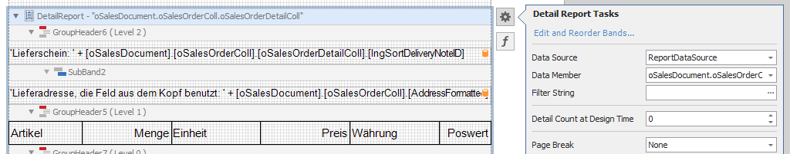
Die Limitation eines Detail Report Bands ist es, dass die Data Source dessen immer unter der des Detail Reports liegt. Falls über eine separate Collection außerhalb dessen iteriert werden muss, sollte ein Embedded Subreport eingesetzt werden.
GroupHeader/ GroupHeaderFooter
Die GroupHeader/Footer Bands stellen die Gruppierungs- und Sortierungsfunktionalität bereit. Sie müssen nicht immer in Paaren erstellt werden – alleinstehende Header und Footer sind möglich.
Beide Bands stehen in Relation zu ihrem Detail Band. Die Distanz (in Bändern) zum Detail Band sind im „Level“-Property festgesetzt. In der Gruppierung lassen sich mehrere Felder und Sortierungen kombinieren. Über den Smart Tag des Bands lässt sich unter „Group Fields“ ein Editor hierfür öffnen.
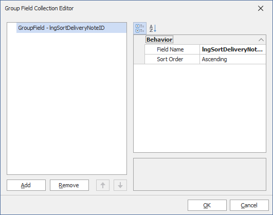
Gleichzeitig unterstützen Group Bands automatisches Sortieren auf Basis von Summierungen über ausgewählte Felder der Objekte in der Gruppierung. Auch für diese gibt es einen dedizierten Editor, welcher sich über „Sorting Summary“ öffnen lässt.
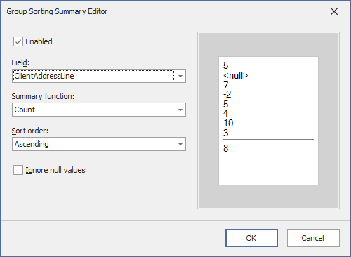
Das Ergebnis der jeweiligen Summe bestimmt daraufhin, in welcher Reihenfolge die einzelnen Gruppen gedruckt werden. Es wird empfohlen, die Positionen des Reports mit einer Gruppe zu umschließen. Gruppen bieten Features explizit für dieses Szenario an, z.B. „Repeat Every Page“. Diese Checkbox erlaubt Überschriften in dem Group Header zu platzieren und sie auf jeder Seite erneut zu drucken, unabhängig des Page Headers.
Tip
Nur die Detail- und Group Bands können zur Anzeige dynamischer Datenquelleninhalte verwendet werden. Andere Bands zeigen Titel, Zusammenfassungen und andere zusätzliche Informationen an.
Sorting Summary in Group Bands
Group Bands bieten ein sog. Sorting Summary an.
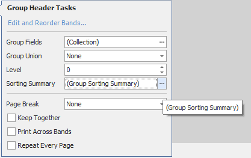
Das Sorting Summary wird nicht genutzt, um z.B. eine Gesamtsumme darzustellen, sondern dient zur Bestimmung der Sortierreihenfolge innerhalb der Gruppe. Die folgende Konfiguration, beispielsweise, sortiert die Datensätze der Gruppe nach der jeweiligen Anzahl der ClientAddressLine-Datensätze:
Controls und Custom Controls
- Wichtige Eigenschaften zu Labels finden sich hier
- Zusätzlich zum sehr umfangreichen Angebot von DevExpress® werden im FS Report Designer zusätzliche der Embedded Subreport und der Linked Subreport angeboten. Nähere Informationen hierzu finden Sie hier.
- Das Control Fold Mark Settings ermöglicht das Drucken von Falzmarken für Briefe am Rand der Seite.
- Für den Übertrag von Daten auf die vorherige Seite kann das Carry Forward genutzt werden.
Expressions, Calculated Fields und FilterStrings
DevExpress® Expressions sind das Formel-Äquivalent von DevExpress®. Sie werden allerdings nicht zentral verwaltet, sondern sind immer Teil eines Properties. Expressions bestimmen entweder ein Property eines Calculated Fields, oder direkt den Wert eines Properties an einem Control.
Für die spezielle Expression Language hat DevExpress® eine ausführliche Dokumentation.
Expressions bei Properties
Ausgewählte Properties können ihren Wert direkt durch Expressions berechnet bekommen.
Durch diese Funktionalität lassen sich bspw. dynamisch Schriftgrößen ändern oder die Unterdrückungsformeln von Crystal nachbilden.
Um eine Expression zu editieren, kann der f-Button in dem entsprechenden Feld betätigt werden.
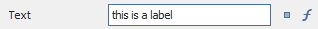
Dieser öffnet eine Übersicht über alle Properties des Controls, welche eine Expression besitzen können, und erlaubt es, sie zu editieren.
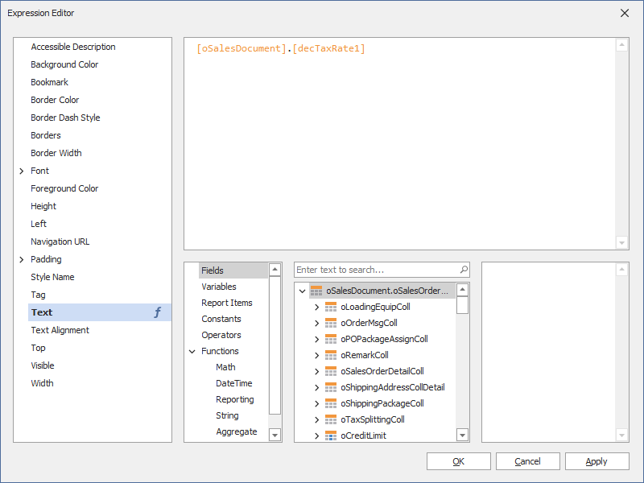
Calculated Fields
Calculated Fields sind "künstliche Felder" mit einem Expression-Property, welches es erlaubt, einen Wert per Expression zu erhalten. Künstliches Feld bedeutet, dass kein Datenbankfelder (z.B. sName) diesem zugrunde liegt. Sie werden wie normale Datenbankfelder behandelt und lassen sich in allen Situationen verwenden, in welchen auch Datenbankfelder zum Einsatz kommen. Im Fenster Field List lassen sie sich erstellen und einer Datenquelle unterordnen. Über das Kontextmenü in der Field List kann man eine Übersicht über alle Calculated Fields öffnen.
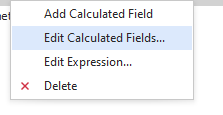
Diese beinhaltet alle Calculated Fields und erlaubt es, diese zu verwalten.
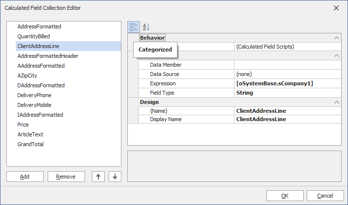
Filter Strings
FilterStrings erlauben es, die Datenquelle auf Basis einer Expression einzuschränken, wenn man einzelne Daten nicht nutzen möchte (z.B. um nur einen bestimmten Kunden unter Betracht zu ziehen). Da Detail Report Bands die Funktionalität von Subreports für Positionsdrucke ersetzen sollen und eine eigene Datenquelle besitzen, haben auch sie einen eigenen Filter String.
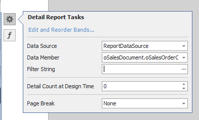
Die genaue Syntax von Filter Strings findet sich, wie die Syntax von Criteria, auf der offiziellen DevExpress®-Website.
Summen
DevExpress® bietet eine ausführliche Doku zu Summen. Im Folgenden wird auf die einzelnen Möglichkeiten kurz eingegangen.
- Innerhalb Groups kann summiert werden. Eine kurze Zusammenfassung hierzu findet sich hier
Zwischensummen
Besonders Zwischensummen aus mehreren verschiedenen Feldern setzen in Crystal viele Umstände voraus – es werden Funktionen für die Zwischenstände benötigt, welche am Ende manuell aufaddiert werden müssen. Diese Möglichkeit besteht auch in DevExpress® (Ansatz mit Hilfe eines Calculated Fields), aber es bestehen weitere und bessere Optionen.
Statt ein separates Calculated Field zu erstellen, kann man stattdessen ein eigenes Label erstellen, dessen Expression eines der nativen Summen-Expressions nutzt. Diese akzeptieren mehrere Datenbankfelder und Calculated Fields, was eine laufende Summe über mehrere Felder über eine Formel ermöglicht.
Calculated Field-Summen
Die Berechnung von Summen über Calculated Fields ist nicht mehr die offiziell empfohlene Variante, aber immer noch nutzbar. Hierfür muss einfach ein neues Calculated Field angelegt werden, in wessen Expression die gewünschte Summe manuell berechnet wird. Dieses Calculated Field kann dann beliebig genutzt werden, um die errechnete Summe anzuzeigen.
Tipps und Tricks
In diesem Kapitel sind Tipps und Tricks aufgeführt, die den Umgang mit Reports in DevExpress® erleichtern können.
Methode GlobalOnBeforePrintSubreport
Am Global wurde die Methode GlobalOnBeforePrintSubreport hinzugefügt. Diese Methode ermöglicht das Umlenken eines Subreports auf eine eigene Customization.
Ausrichtung vieler Labels
Werden mehrere Labels hinzugefügt, kann die Ausrichtung der Elemente aufwändig sein. DevExpress® bietet die Funktion "Convert to Table" an, welche für eine Anordnung verwendet werden kann.
- Markieren Sie die entsprechenden Labels. Diese dürfen sich horizontal nicht überschneiden.
- Über das Kontextmenü (Rechtsklick) können Sie die Funktion "Convert to Table" ausführen.
Nun sind alle Labels auf einer Höhe ausgerichtet. Sollten Sie keine Tabelle benötigen, kann auf gleichem Weg die Tabelle wieder in einzelne Labels umgewandelt werden. Die Anordnung und Ausrichtung bleiben bestehen.
Vorgehensweise für die Konvertierung einer Tabelle in einzelne Labels:
- Markieren Sie die Tabelle über das "Vier-Pfeile"-Icon am oberen linken Rand der Tabelle.
- Über das Kontextmenü (Rechtsklick) können Sie die Funktion "Convert to Labels" ausführen.
Minimale Höhe in einer Band
Ziehen Sie den unteren Rand eines Bands über die darin enthaltenen Controls. DevExpress® verkleinert das Band auf die minimale Höhe, welche die Felder im Band benötigen.
- Größe des Bands über das letzte Control ziehen: 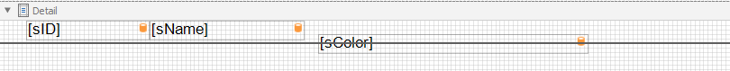
- Die Höhe des Detail Bands ist nun direkt unter dem letzten Label "sColor". 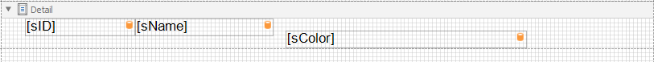
How to use: Detail Band Reports - Embedded Subreports
In diesem Kapitel werden detaillierte Anwendungsfälle der Detail Reports und Subreports vorgestellt und ausführlich beschrieben. Die Beispiele basieren auf dem Repository FSDemo und können mithilfe dessen nachgestellt werden.
Vorbereitung
Das Beispiel basiert auf FSDemo, weshalb zunächst ein neues FSDemo-Repository angelegt werden muss. Anschließend muss dieses FSDemo mit dem User "user1" gestartet werden. Es genügt die Anmeldung am Default-Package.
- An der Form
frmCompanyein Event zum Print-Button "OnClick"-Event hinzufügen und folgenden Code in die Methode einfügen.
protected virtual void FE_btnPrint_OnClick(FrameworkButtonClickEventArgs e)
{
var rpt = new rptCompanyList(this.Global, rptCompanyList.Reports.SideBySide, ExportFormat.PDF);
rpt.oCompanyColl = this.oCompanyColl;
var articleColl = FS.Demo.Article.cdArticleCollFactory.Create(this.Global);
articleColl.Load();
rpt.oArticleColl = articleColl;
rpt.Print();
}
- Das Property Visibility des Print-Buttons auf Visible setzen.
- Einen Report
rptCompanyListim Namespace Company anlegen. - Dem Report in der Registerkarte DataSource die DataSources oArticleColl und oCompanyColl zuweisen.
- Anschließend in der Registerkarte Report Files einen neuen DevExpress® Report anlegen. Im Beispiel wurde dieser "SideBySide" genannt. Möchten Sie den Report anders benennen, müssen Sie im Methoden Code der
FE_btnPrint_OnClickden Namen entsprechend anpassen.
Anzeige des Reports:
- Starten Sie die Applikation mit F5.
- Navigieren Sie in der gestarteten FSDemo-Applikation zum Kunden.
- Klicken Sie auf die Lupe, um entsprechende Datensätze zu laden.
- Über das Print-Icon können Sie sich nun den fertigen Report ansehen.
Detail Report anlegen
Dieses Tutorial soll veranschaulichen, wie hierarchische Daten in einem Report mit verschachtelten Detail Report Bands angezeigt werden können.
- Einen Report mit Hilfe des FSReportDesigners öffnen.
- Im Fenster Report Explorer den report auswählen und das Property Data Member auf oCompanyColl setzen.
- Anschließend, falls kein Detail Band vorhanden ist, dies mit Rechtsklick auf dem Report über "Insert Band" - "Detail" hinzufügen.
- Im nächsten Schritt Rechtsklick auf das Detail Band im Report. Im daraufhin geöffneten Kontextmenü kann über "Insert Detail Report" eine Datenquelle ausgewählt werden (siehe Abbildung).
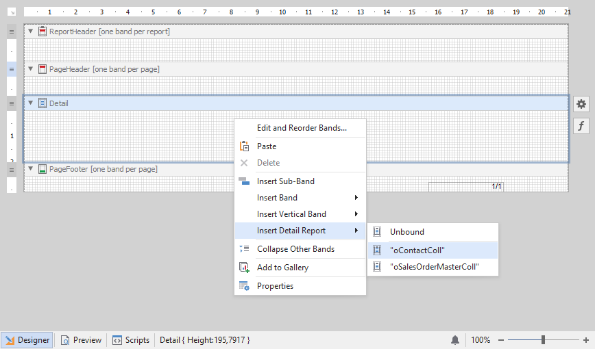
Die angebotenen Datenquellen im Kontextmenü beim letzten Schritt befinden sich eine Ebene unter dem Data Member des Haupt-Reports.
Über das Fenster Report Explorer kann der Haupt-Report (hier report) ausgewählt werden und anschließend in den Properties der Data Member eingesehen werden (siehe folgenden Screenshot).
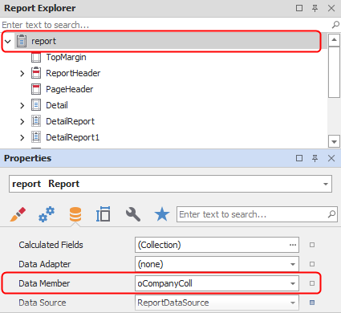
Sobald eine Datenquelle ausgewählt wurde, wird im Report im oberen Teil des Detail Reports der komplette Datenpfad angezeigt.
Warning
Falls dem Report über die DataSource zwei Collections übergeben wurden, kann im Haupt-Report der Data Member auf eine andere Collection geändert werden. Dies wird jedoch nicht empfohlen, da hierdurch bestehende DetailReports auf falsche Datenfelder verweisen können. Sind die Datenfelder in der neu zugewiesenen Collection nicht vorhanden, führt dies zu Fehlern.
Detail Report strukturieren und Felder hinzufügen
Klickt man auf ein Detail Report wird automatisch im Fenster Field List die zugehörige Datenquelle ausgewählt. Dies ist im folgenden Screenshot dargestellt.
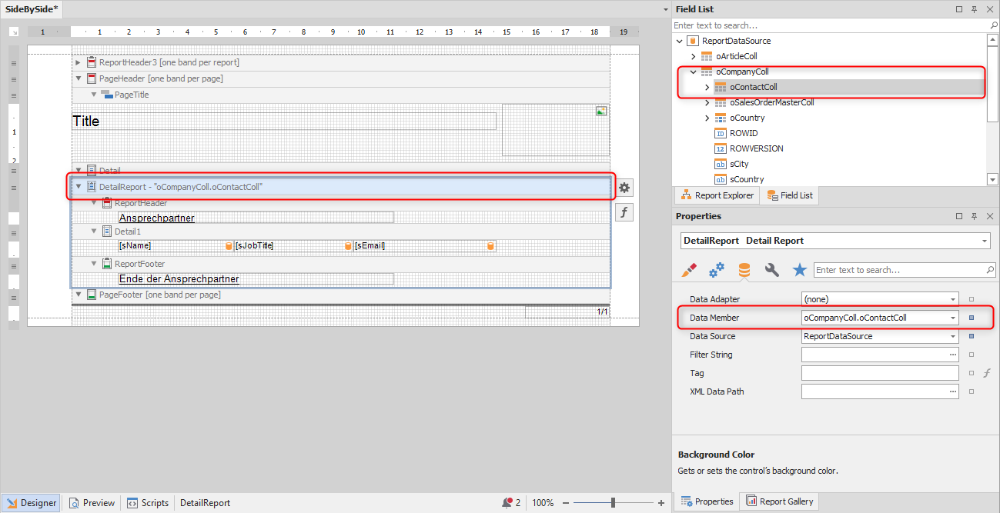
Im Baum der Field List kann nun der Eintrag oContactColl aufgeklappt und einzelne Felder auf das Detail Report Band gezogen werden.
Wie im Bild ebenfalls zu sehen, wurde mit einem ReportHeader und einem ReportFooter gearbeitet. Diese können über Rechtsklick auf dem DetailReport hinzugefügt werden. Sie werden einmalig am Anfang bzw. am Ende des Detail Reports gedruckt. Im Beispiel dient dies zur besseren Übersicht im gedruckten Report. Im folgenden Screenshot sehen Sie, welche weiteren Auswahlmöglichkeiten zur Verfügung stehen.
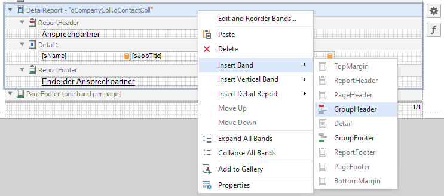
Der fertige Report sieht wie folgt aus:
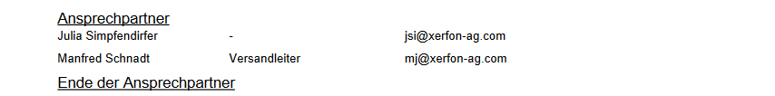
Iterieren über Collections außerhalb des Detail Bands
Ist das Ziel über Daten zu iterieren, welche im ReportHeader, PageHeader, ReportFooter, oder PageFooter angezeigt werden sollen, muss dies über einen Subreport realisiert werden.
Als Beispiel sollen die ID, der Name und die Farbe aller Artikel ausgegeben werden. Auf dem nachfolgenden Screenshot sehen Sie das fertige Ergebnis des Reports im FSReportDesigner. Auf der linken Seite befindet sich der Haupt-Report "SideBySide". Auf der rechten Seite ist der Embedded Subreport mit den Daten zu den einzelnen Artikeln.
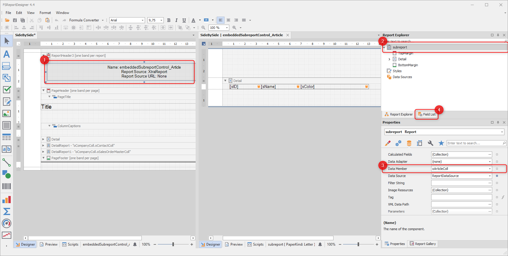
Die Vorgehensweise ist wie folgt:
- Zunächst muss ein Embedded Subreport Control auf den Report gezogen werden. Im Beispiel wird dies auf den ReportHeader gezogen.
- Ggf. kann zunächst der Namen des Controls geändert werden.
- Anschließend muss der Embedded Subreport mit Doppelklick geöffnet werden. Dieser befindet sich im Bild auf der rechten Seite. Die Fenster auf der rechten Seite zeigen die Details des Embedded Subreports an.
- Nach dem Öffnen des Subreports müssen Sie in das Fenster Report Explorer wechseln und dort, wie bei Schritt 2 im Bild, den Subreport auswählen.
- Anschließend kann im Properties Fenster der Data Member ausgewählt werden (Schritt 3 im Bild). Im Beispiel wurde hier die zweite Collection oArticleColl ausgewählt, welche per DataSource dem Haupt-Report zugewiesen wurde.
- Als letzten Schritt können Sie nun über das Fenster Field List verschiedene Datenfelder auf den Report ziehen. Im Bild sind sID, sName und sColor hinzugefügt worden.
- Speichern und fertig.
Ergebnis: Einmalig auf der ersten Seite im Report wird nun die Liste der Artikel mit den Daten ID, Name und Farbe ausgegeben.
Kombination der verschiedenen Möglichkeiten
Auf dem nachfolgenden Screenshot sehen Sie die Zusammenfassung der bereits erklärten Beispiele, welche zusätzlich farblich aufbereitet wurden. Dies dient einer besseren Übersichtlichkeit. Des Weiteren wurde ein DetailReport hinzugefügt, welcher über die Bestellungen der Firma iteriert. Die zugehörige Überschrift lautet "Bestellungen" und ist gelb. Diesen DetailReport können Sie als Übung selbst hinzufügen und sich am bereits erstellten Ansprechpartner-DetailReport orientieren.
Auf dem Report werden folgende Informationen angezeigt:
- Embedded Subreport im ReportHeader: Iteration über die verschiedenen Artikel
- DetailReport oCompanyColl.oContactColl: Iteration über die Ansprechpartner
- DetailReport oCompanyColl.oSalesOrderMasterColl: Iteration über die verschiedenen Bestellungen
Report im FSReportDesigner: 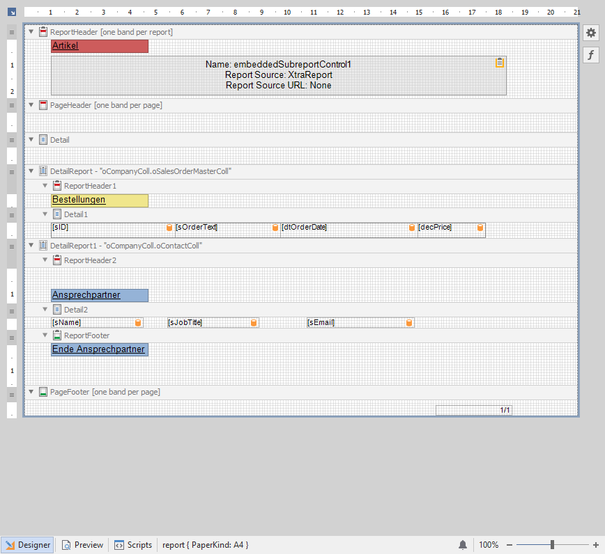
Ergebnis:
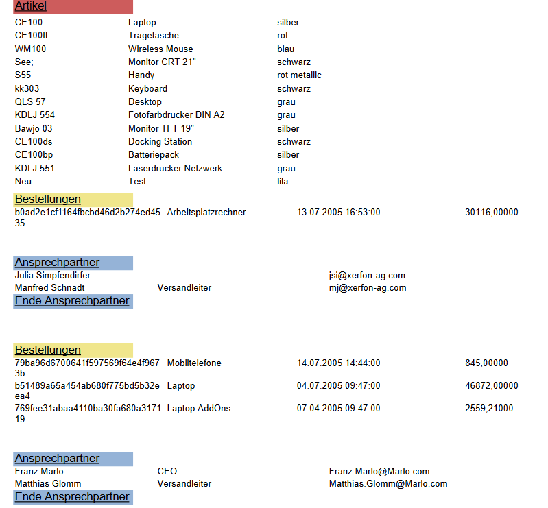
Datenanzeige direkt im Detail Band
Auch im Detail können Daten bspw. der Firma ausgegeben werden. Diese wurden nachträglich zum Detail Band, welches über die Bestellungen iteriert, hinzugefügt. Die Firmendaten haben einen grauen Hintergrund.
Report im FSReportDesigner:
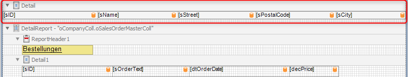
Ergebnis:
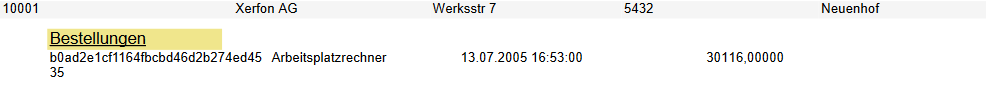
Daten in mehreren Spalten anzeigen
Innerhalb des DetailReports mit dem Data Member "oCompanyColl.oSalesOrderMasterColl", in welcher bereits die Bestellungen durchlaufen werden, legen wir nun einen weiteren DetailReport an.
- Über das Detail Band der "Bestellungen" kann über das Contextmenü "Insert Detail Report" - "oSalesOrderDetailColl" ausgewählt werden.
- Nachdem man einen ReportHeader und das Label "Positionen" hinzugefügt hat, sieht der Report wie im folgenden Screenshot aus. Rot umrandet ist der neu angelegte Detail Report. 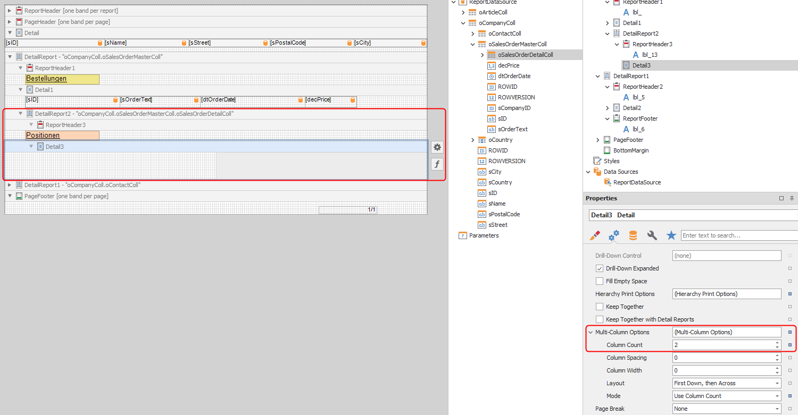
- In diesem Screenshot kann man des Weiteren sehen, wie ein Report in Spalten aufgeteilt werden kann. Im Fenster Properties ist dies markiert. Zusätzlich sollte die Einstellung Layout bei den Multi-Column-Options auf "First Accross, then down" gesetzt werden. Ansonsten werden die Positionen nur nebeneinander angezeigt, wenn beispielsweise am Ende der Seite kein Platz mehr für alle Positionen untereinander vorhanden ist.
- Anschließend das Control "Panel" auf das Detail ziehen und die gewünschten Datenfelder zum Panel per Drag&Drop hinzufügen.
Der fertige Report mit Panel und Multi Column im FSReportDesigner:
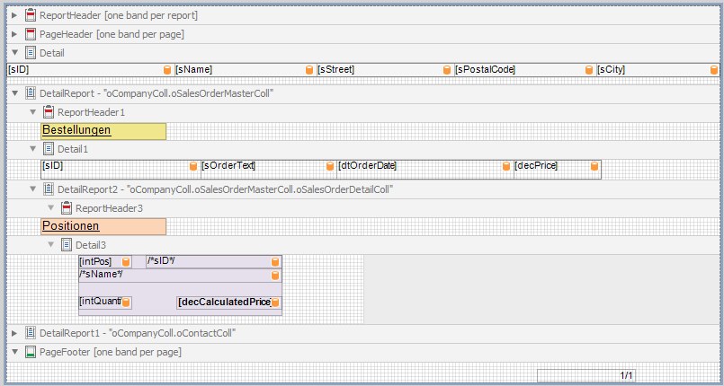
Ergebnis:
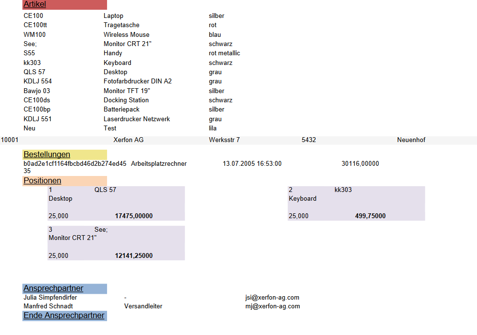
Ansprechpartner im Embedded Subreport
Es gibt die Möglichkeiten die Anzeige der Bestellungen und Ansprechpartner nicht über Detail Reports, sondern mittels Embedded Subreports zu lösen. Ziel ist, dass die Ansprechpartner neben den Bestellungen und Positionen angezeigt werden.
Note
Die nachfolgende Vorgehensweise ist auf Basis des obigen Reports. Die Überschriften sind im Embedded Subreport mit grünem Hintergrund versehen.
- Im Detail Band unterhalb der Firmen Infos (grauer Hintergrund) zwei Embedded Subreports hinzufügen.
- Diese nebeneinander anordnen.
- Den linken Report in
embeddedSubreportControl_Contactumbenennen. - Den rechten Report umbenennen in
embeddedSubreportControl_Orders. - Den linken Report öffnen, ein Detail Report über das Kontextmenü "Insert Detail Report" - "oContactColl" hinzufügen und wie im Screenshot mit Daten aus der "oCompanyColl.oContactColl" füllen: 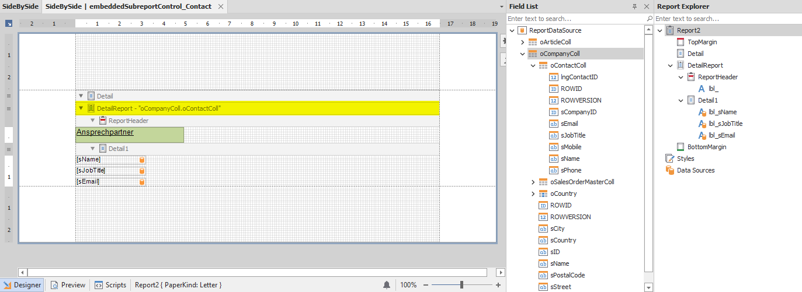
- Anschließend im Fenster Field List die "Parameters" auswählen und über Rechtsklick einen neuen Parameter hinzufügen.
- Diesen wie im folgenden Screenshot anlegen (Type: Guid; Name "Company_ROWID"). 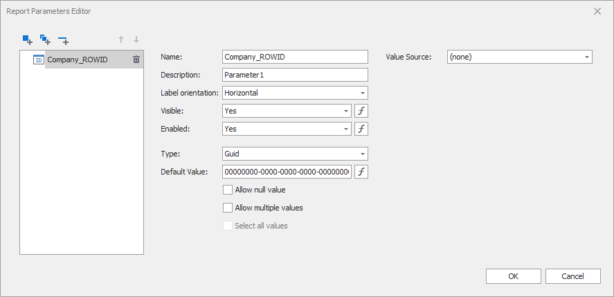
- Als letzten Schritt muss im Embedded Subreport im Fenster Report Explorer der oberste Report ausgewählt werden. Im Bild heißt dieser "Report2". Im Fenster Properties in der Registerkarte data beim Property "Filter Strings" folgende Formel angeben:
[ROWID] = ?Company_ROWID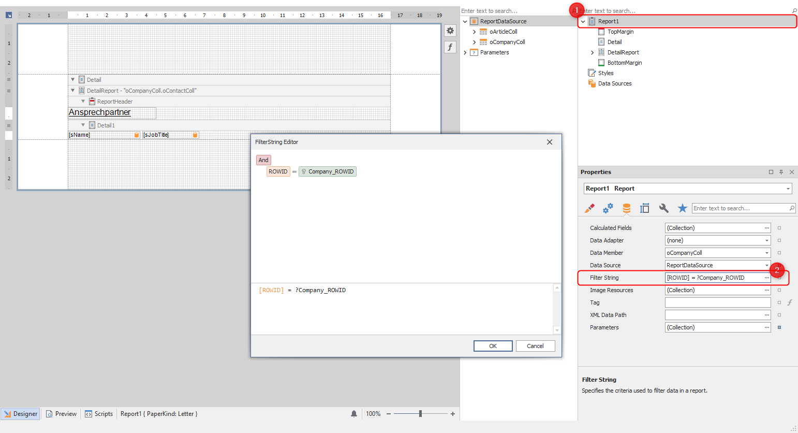 - Anschließend den Embedded Report speichern und schließen.
- Am
embeddedSubreportControl_Contactim Haupt-Report auf das Zahnrad-Icon klicken und anschließend Edit Parameter Bindings... auswählen (siehe Screenshot). 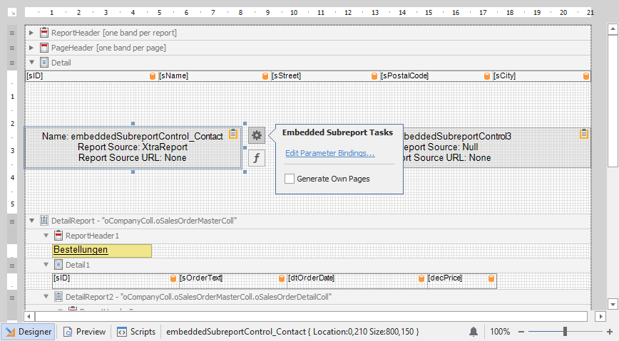 - Im nun geöffneten Parameter Binding Collection Editor auf den Button Sync klicken. Hiermit wird der im Subreport angelegte Parameter automatisch hinzugefügt. Im rechten PropertyGrid muss nun bei Binding auf die ROWID der oCompanyColl verwiesen werden. 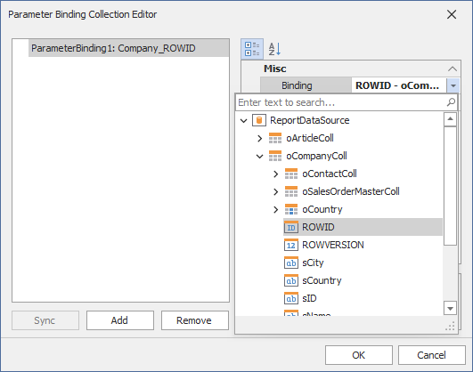
- Das Fenster mit Ok schließen.
Note
Nur wenn sie zusätzlich zum Parameter auch den Filter String anlegen, wird nach der ROWID gefiltert. Ansonsten werden bspw. für alle Firmen alle Ansprechpartner untereinander angezeigt.
Auf diesem Screenshot ist zu sehen, wie nun der embedded Subreport auf dem finalen Report aussieht:
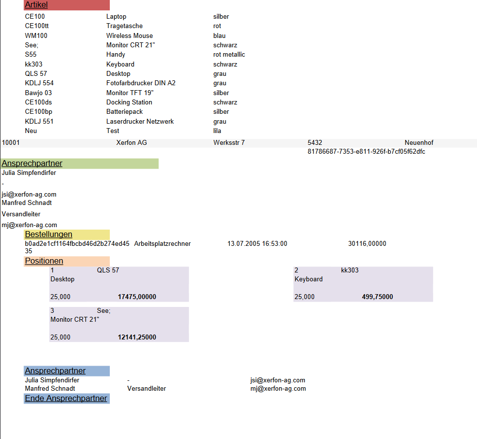
Bestellungen und Positionen im Embedded Subreport
Um auch die Bestellungen und die Positionen ebenfalls mit Embedded Subreports abbilden zu können, ist keine neue Funktion notwendig. Mit den bisherigen Beispielen können Sie sich nun selbst ausprobieren oder der Anleitung weiter folgen.
Die Vorgehensweise ist wie folgt:
- Falls noch kein entsprechender Embedded Subreport unterhalb der Firmeninfos hinzugefügt wurde, muss dies nun getan werden. Der Embedded Subreport sollte in keinem Detail Report, sondern direkt im Detail Band eingebunden werden.
- Den Subreport in
embeddedSubreportControl_Ordersumbenennen. - Subreport embeddedSubreportControl_Orders öffnen.
- Anschließend den Report mit folgenden Controls befüllen: 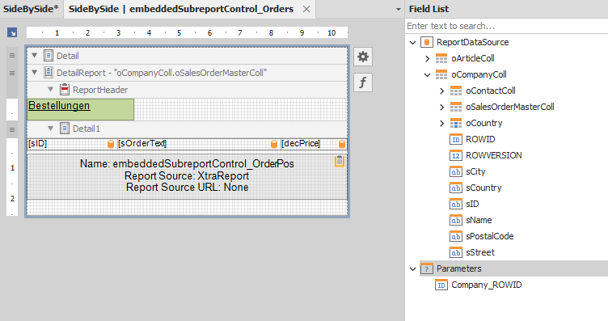
- Zusätzlich muss noch ein Parameter
Company_ROWIDhinzugefügt werden. - Nennen Sie den hier hinzugefügten Embedded Subreport bitte ebenfalls
embeddedSubreportControl_OrderPos, da dieser im Folgenden so genannt wird. - Anschließend müssen im Report
embeddedSubreportControl_Ordersauf das oberste Report Element im Report Explorer klicken und den Filter String auf[ROWID] = ?Company_ROWIDsetzen. - Als letzten Schritt müssen Sie zurück in den Haupt-Report und beim Control
embeddedSubreportControl_Ordersauf das Zahnrad-Icon klicken und Edit Parameter Bindings auswählen. Im nun geöffneten Fenster können Sie wieder über den Button Sync den Parameter aus dem Embedded Report ziehen und müssen nur das Binding auf "oCompanyColl.ROWID" setzen. - Die erste Ebene ist nun vollständig.
Als nächstes wird erklärt, wie Sie die Positionen anzeigen können.
- Navigieren Sie in den
embeddedSubreportControl_OrdersReport und von dort in denembeddedSubreportControl_OrderPosSubreport. - In diesem müssen Sie zwei Detail Reports hinzufügen. Diese müssen wie im folgenden Bild angeordnet sein: 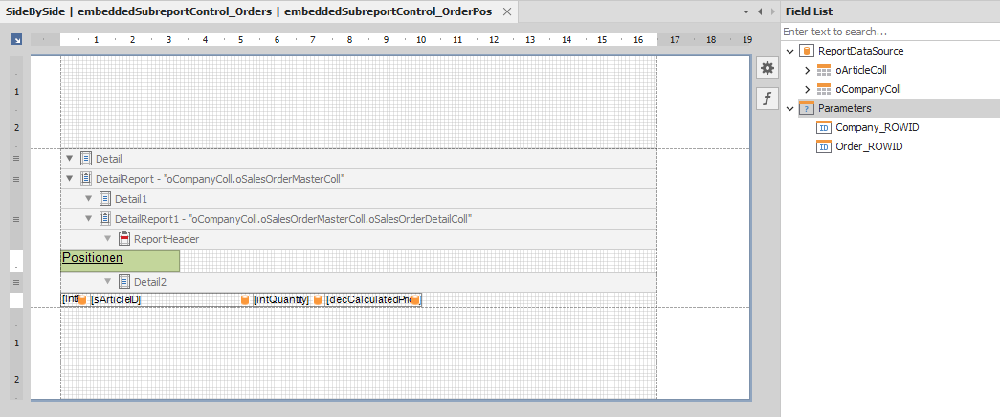
- Des Weiteren müssen diesmal zwei Parameter angelegt werden. Diese sind beide wieder vom Type: GUID und lauten: Company_ROWID und Order_ROWID
- Als nächstes muss erneut ein Filter String zum obersten Report Element hinzugefügt werden. Dieser lautet wie folgt:
[ROWID] = ?Company_ROWID - Nun navigieren Sie zum
embeddedSubreportControl_Ordersund legen amembeddedSubreportControl_OrderPosControl die beiden Parameter Bindings an. Das Binding der Company_ROWID ist identisch zu den Beispiele zuvor. Das Binding der Order_ROWID lautet: oCompanyColl.oSalesOrderMasterColl.ROWID 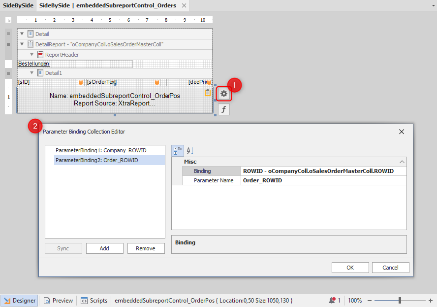
Der finale Report sieht nun wie folgt aus: 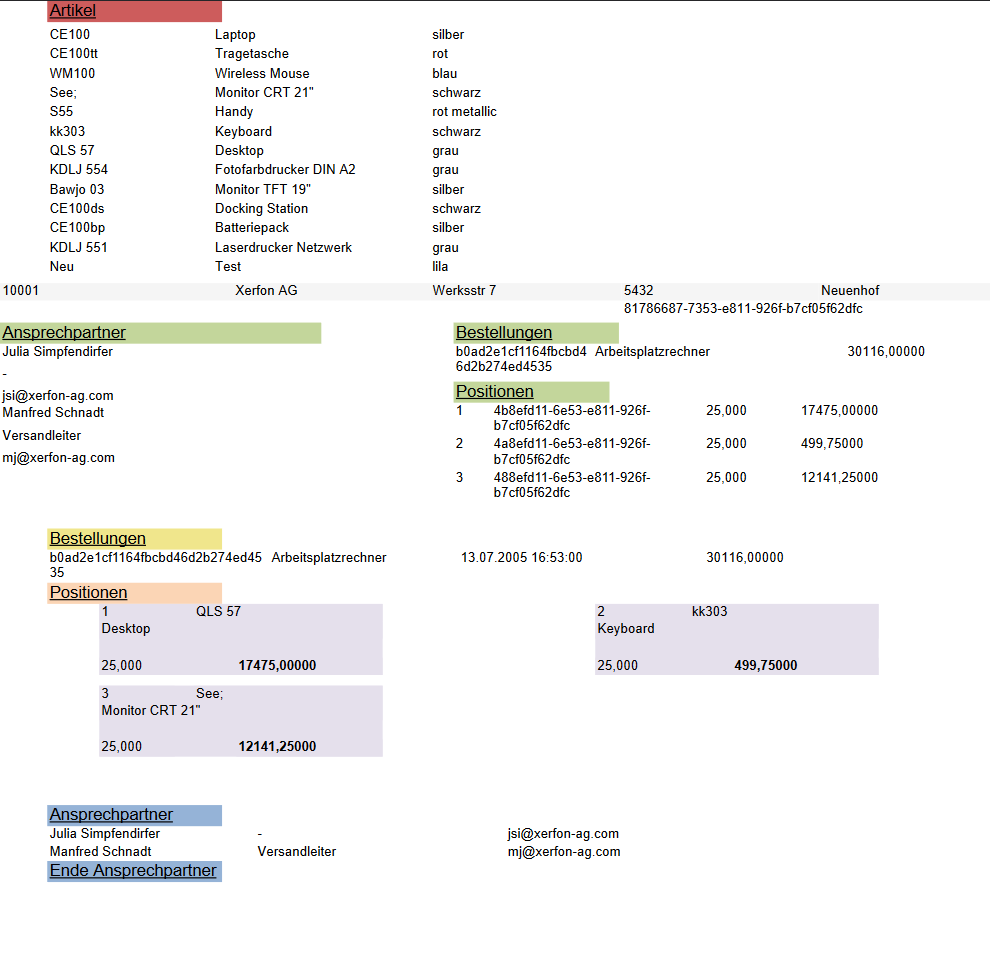